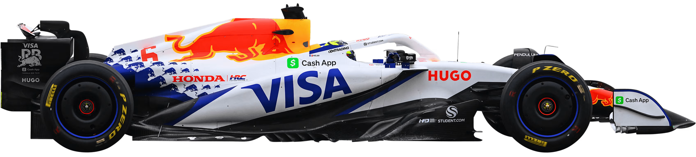
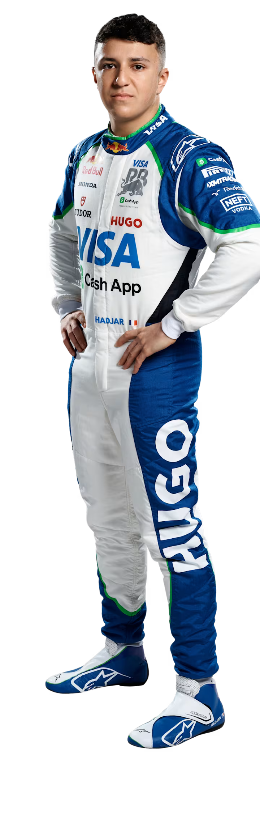
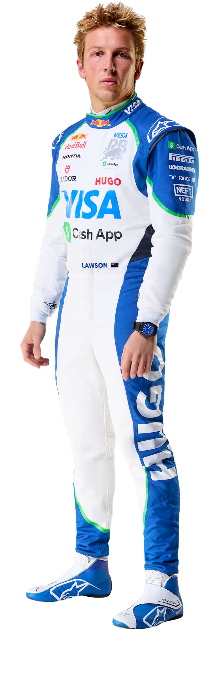

Fundada em 2006 como uma equipa destinada a permitir que jovens pilotos do vasto programa de talentos da Red Bull ganhassem experiência na F1, a Racing Bulls — originalmente chamada Toro Rosso, depois AlphaTauri e agora RB — surgiu das cinzas da corajosa equipa Minardi. Sebastian Vettel deu validade a essa abordagem quase de imediato, conquistando uma vitória de conto de fadas em 2008, antes de alcançar o sucesso mundial com a equipa-mãe, Red Bull Racing. Hoje, o espírito de desenvolvimento de talentos continua vivo, embora a equipa italiana já não seja apenas uma “equipa B”, mas um construtor por direito próprio...